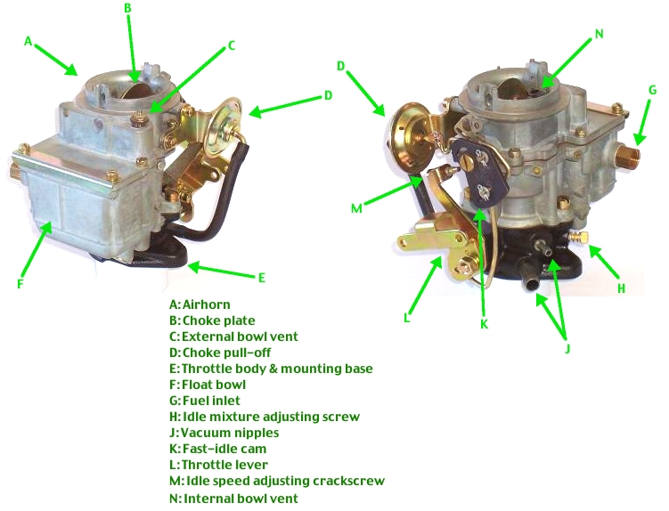
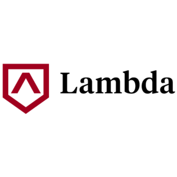

Let Us Start With Why...
Before I ever even thought about coding, I was fascinated with technology and wondered how it worked. One of my earliest memories is peering into my Nintendo 64’s slot and questioning how all the characters in the game could possibly fit through such a tiny space. Nowadays, I comprehend this was an absurd childhood speculation. The curiosity and the drive to figure out how the components of something work are still with me though, and they, along with a few other personality traits of mine, helped drive me into the world of programming.
I have always been a very technical person. By the age of twelve, I was ripping the carburetors out of my dirt bikes and trying to open the jets up. Somewhere I had read more gasoline equated to higher combustion which resulted in faster speeds. Since the carburetor’s jets controlled the flow of the precious gasoline, I purchased a Dynojet kit with my birthday money and proceeded to carry out my planned alterations.
After a few days of hard work, the carborator was back in one piece on the bike. There was one major problem though; the bike sputtered and died out at idle. This was how I discovered more gasoline only results in more combustion if more air is also added into the equation. Without increased levels of air, the bike runs rich, and the too wet gasoline simply drowns out my spark plus. My bike sat for weeks until my friend’s father gave me some much bigger air filters.
Sadly, the days of my childhood mechanical adventures are over and done for. In 2019, virtually everything in a dirt bike is controlled by a computer. For example, carburetors have been replaced by the injector, and we also have Ram Air systems. Instead of rebuilding the carburetors, stripping down most of the bike and then putting it all back together again for the adjustment, all you have to do now is plug a bike into a computer and program how you want it to run.
The idea of a computer program saving me all of the time and effort is truly amazing. Days of hard and dirty work are abstracted away by a few minutes of clicking. I am constantly coming across similar situations where programs transform a daunting and difficult task into a mundane and simple one.
After four years of serving my country as a Combat Medic in the military, I found myself searching for a new career field. Since I have always had a passion for technology and wanted to become the person behind these programs, I decided to be a developer. I was a little confused about how I would achieve my goal though and questioned if I could spend another four year obtaining a degree in this field.
The Beginning
My original plan was quite simple. The next three months would consist of me teaching myself how to code and ensuring programming was something I truly loved doing. If this phase of my plan was successful, I would then apply to college in the spring. My entire curriculum came from YouTube and CodeAcademy. Any extra time I had was devoted to reading and watching videos in order to get a feel for what area of programming interested me the most.
I started with easier material. HTML5 was my first language, and then I quickly learned how to style my mark up with CSS. I was amazed at how fast I learned to fully build landing pages. I soon added Python and JavaScript to my curriculum. At this point, I was following the general consensus of the developers I viewed on YouTube since I was focused on HTML, CSS, and JavaScript. I was coding in Python too because it was so much fun!

Around month two of my independent study period, I decided I did not need to pursue a four year Computer Science degree at a university. I felt like I was learning so much on my own, and all of the feedback I was receiving agreed with this. Around month three, I secured a low paying internship for the corporate office of a nutritional supplement company I already worked for; I was extremely lucky to receive this internship. While I did not gain a lot of new coding skills at it, I did obtain related knowledge in workflow processes like completing tickets, participating in stand-up meetings, and utilizing Git/GitHub.
My primary responsibilities for this internship included updating the existing code base to be up to the accessibility standards of the new company policy. Also, I tweaked existing site styling and ran performance audits. Overall, I was very grateful for this internship opportunity but desired something which would allow for me to really learn new code. I felt I was not progressing as much as I had been when I was simply learning new things all day by myself.
Around month five of my internship, I was hearing about coding bootcamps. They claimed to give you all of the knowledge you needed for a real programming job in only three months. WOW!! At first, I doubted the credibility of these claims since they seemed so unbelievable. After quite a bit of research, I was still unsure. Many online sites and forums warned against these bootcamps and said they preyed on people who thought they could earn six figure salaries in just three months. This angle did not apply to me personally though; my focus was not on the money. I really desired to get better at something I enjoyed.
After weeks of mulling it over, I decided to join a coding bootcamp. I even planned on applying for a loan from the bank and quitting my current job so I could dedicate all of my time to the bootcamp. I had decided to attend Hack Reactor’s three month course since I wanted to attend class in-person and they had a location in my city. Even though many people were warning me against it, I decided to take the chance.
Two weeks before I was scheduled to start the bootcamp, I was still participating in my normal afternoon study routine. While watching my favorite channel, Funfun Function, I came across an advertisement for Lamda School. I was very intrigued by what they said. After a little bit more research, I confirmed it was everything I was wanting and needing from a coding bootcamp.
Lamda School was very different from the previous bootcamps I had looked at. Instead of twelve weeks, Lamda was a nine month plus accelerated Computer Science course. Even after the nine months of full-time course work, you could elect to take four more complete curriculum tracks for free! They were teaching a full stack program and were staying up to date and only teaching cutting edge technologies like React and Node.js. I really enjoyed the CEO Austen’s message and decided to apply that same day. This time around, I did not read any forums, I did not reach out to anyone, I simply did what I knew in my heart I had do.
About a week after I applied, I had my interview with Lamda and was accepted! Luckily, a few phone calls to Hack Reactor and my bank resulted in me obtaining a full refund of my money. My time was now occupied with Lamda’s twenty hours of pre-course work, and my cohort would start in two weeks. I was excited to spend at least ten hours everyday for the next nine months learning through Lamda. I was fully ready to commit to this exciting opportunity.
The Middle
My experience at Lambda school fully lived up to my expectations. The first four months of curriculum were absolutely brutal. The first month consisted of topics I had believed I knew well like HTML and CSS. Lamda proved to me I still had much room for improvement; Lamda did not just stop at teaching me how to code. They also taught me the skill of learning how to break down a problem into its base components, the history, and the culture. They did not tell me how to think, and I believe this is the mistake other bootcamps make. These other bootcamps force feed you the syntax until you can simply copy it back into another program. Lamda teaches you how to think and program your own code. The teach you how to find the answers to solve your own problems even if you have not encountered them before.
The following three months consisted of learning React and Node.js. While the class’s format was the same, I found this segment to be much more challenging since I did not have prior experience in these technologies. I focused on the core of what Lamda was trying to impart in its students though. I knew the main objective was learning how to think, break down a problem, and the ability to utilize the right resources effectively to quickly cipher through massive amounts of documentation. React and Node.js are just another tool in my toolbox to solve problems; the genuine skill is problem solving and analysis.

Finally, the next five months consist of a major capstone project with a hiring manager, and then the next eight weeks focus on Computer Science topics. This material will cover matters such as hash tables, various algorithms, and optimization in Python. I would not have obtained this information in any other bootcamp or anywhere else short of a college education. Lamda is truly a unique and superior experience.
Now...
Upon completing the base curriculum, I applied and was selected for a four month contract position as a Lamda School Team Lead. My responsibilities will include assisting the school with administrative duties and tutoring a team of approximately ten students through the beginning of their Lamda experience. I am thrilled to help others learn while increasing my own knowledge. I believe teaching and explaining these concepts to others will solidify my new skills while allowing me to gain more leadership experience. My time at Lamda was not always smooth. I had setbacks and frustrating periods where I did not always grasp the material quickly; however, I believe this will make me a more valuable mentor since I understand the struggle. At the conclusion of these four months, I will start my capstone project.
I could not be more appreciative of all of the opportunities Lamda gave to me. My experience at this school really honed the development of my social skills and gave me an edge I could not have received anywhere else. The ability to be connected to so many like-minded students who were experiencing the same late nights and weekends of completing homework assignments and hobby projects was unforgettable and invaluable.
While I am still not at my dream, full-time developer job earning 80k, I believe I am far enough along in my journey to becoming an employed programmer to create this blog since I now know how to code. I can appreciate the fact I will always have more concepts and technologies to learn in this field, and I am ecstatic and up for this challenge!